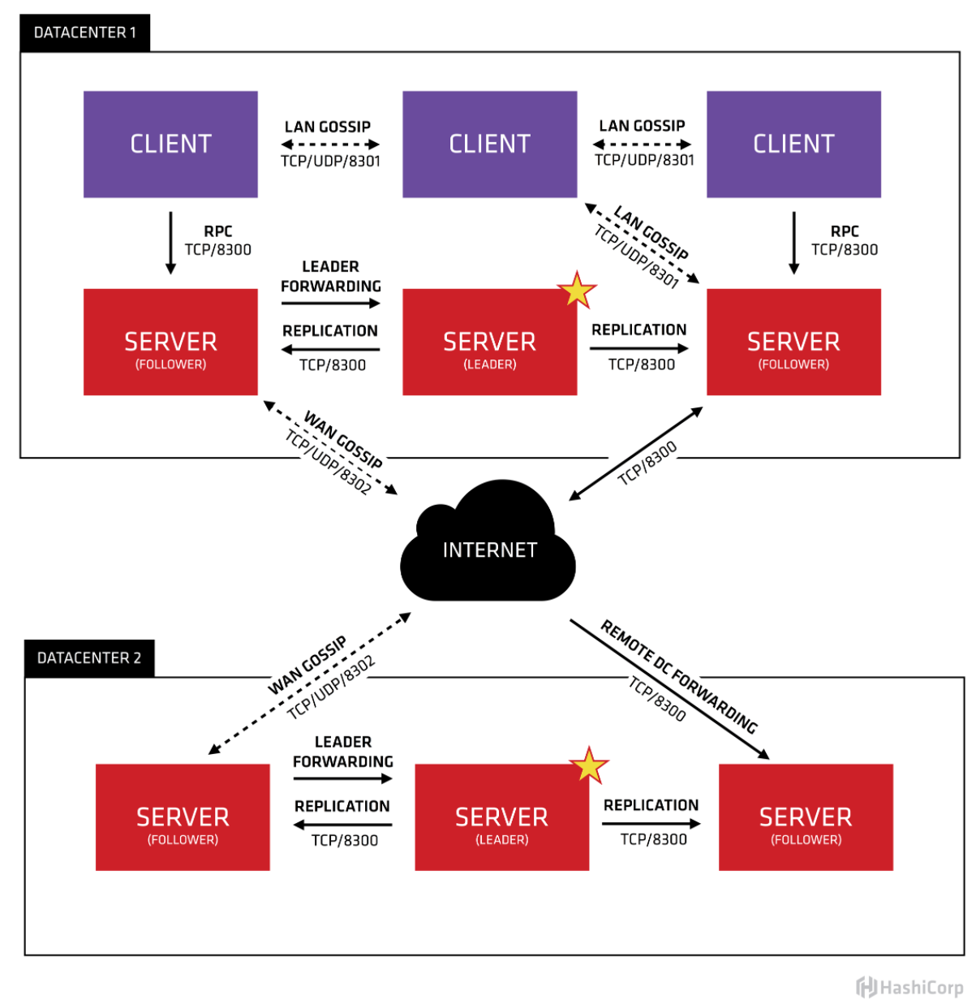
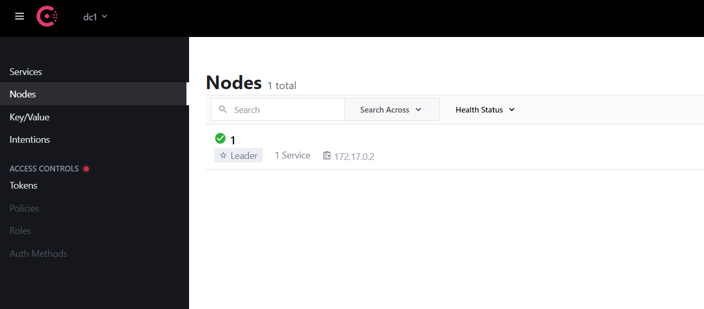
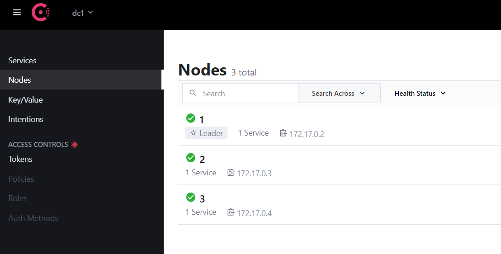

1. 使用 Consul
1.1 简介
Consul 是一个支持多数据中心分布式高可用的服务发现和配置共享的服务软件，由 HashiCorp 公司用 Go 语言开发, 基于 Mozilla Public License 2.0 的协议进行开源。 Consul 支持 健康检查，并允许 HTTP 、GRPC 和 DNS 协议调用 API 存储键值对。 一致性协议采用 Raft 算法,用来保证服务的高可用。使用 GOSSIP 协议管理成员和广播消息，并且支持 ACL 访问控制。
Consul 包含多个组件，但作为整体来看的话主要功能是：为基础设施提供服务发现和服务配置的工具，主要提供以下关键特性：
- 服务发现：Consul 的客户端用于注册服务，其他的客户端可以通过 Consul 来中找到这个注册的服务（使用 DNS 或 HTTP）
- 健康检查：Consul 客户端可以提供任意数量的健康检查，要么与给定的服务相关联（“网络服务器是否返回 200 OK”），要么与本地节点（“内存利用率是否低于 90%”）相关联。可以通过这个信息来监控集群健康状况，并且服务发现组件可以使用它来避免将请求路由到了不健康的主机上
- KV 存储：应用程序可以将 Consul 的分层键/值存储用于多种目的，包括动态配置、功能标记、协调、领导选举等。简单的 HTTP API 使其易于使用。
- 安全服务通信：Consul 可以为服务生成和分发 TLS 证书，以建立相互的 TLS 连接。 意图 可用于定义允许哪些服务进行通信。可以通过实时更改意图轻松管理服务分段，而不是使用复杂的网络拓扑和静态防火墙规则
- 多数据中心：Consul 支持开箱即用的多个数据中心。这意味着 Consul 的用户不必担心构建额外的抽象层以扩展到多个区域
1.2 Consul Agent
每个为 Consul 提供服务的节点都会运行一个 Consul agent，启动 Consul 必须运行 agent（可以选择运行为 Server 或 Client 模式。每个数据中心至少要有一台 Server，一个 Client是一个非常轻量级的进程，用于注册服务，运行健康检查和转发对 Server 的查询） 这个 agent 功能主要在于：
- 负责对节点上的服务以及节点本身进行健康检查
- agent 会与一台或多台 Consul Server 保持通信（Consul Server 用于存储和复制数据）
- Server 会自己选举一个 Leader。虽然 Consul 可以在一台服务器上运行，但建议使用 3 到 5 台以达到高可用。建议为每个数据中心启用 Consul Server集群
- Server 维护一个目录，这个目录保存着所有 Agent 提交的信息，包括哪些服务可用、哪些节点运行哪些服务、运行状况信息等。可以在此处找到 Agent 和目录的交互方式
当需要查找 Consul 中注册的服务或者各节点的基础设施组件时可以查询任何 Consul Server 或者 任何 Consul 代理。代理自动将查询转发到 Server。
每个数据中心都运行一个 Consul 服务器集群。当进行跨数据中心的服务发现或配置请求时，本地 Consul Server 将请求转发到远程数据中心并返回结果。
1.3 Consul 对比
针对服务注册发现有很多中间件都可以做，比如 zookeeper 、Etcd 、doozerd 、eureka，Consul 相比于这些软件优势在于：
- 使用
Raft算法来保证一致性：Raft比复杂的Paxos算法更直接。（zookeeper采用的是Paxos,etcd使用的则是Raft） - 支持多数据中心：内外网服务采用不同端口进行监听，多数据中心集群可以避免单数据中心的单点故障。（
zookeeper和etcd不支持多数据中心） - 支持健康检查：
etcd不支持此功能 - 支持
HTTP/DNS/GPRS协议接口：zookeeper集成比较复杂，etcd只支持http 协议 - 官方提供 WEB 管理界面，etcd 无此功能
综合比较，Consul 作为服务注册和配置管理的新星，还是比较值得关注和研究的。官网：Consul Vs Other Software 。
1.4 Consul 架构

上图是官网给出的 Consul 架构图，简单了解一下这张图。首先可以看到有两个数据中心，分别标注为 "DATACENTER1"和 “DATACENTER2”。Consul对多个数据中心有天然非常好的支持，并推荐这么做。
每个数据中心内都混合着 Client 和 Server。推荐是3到5台 Server。这是在权衡故障场景下可用性和性能之间取得平衡给出的建议（随着机器的增加，共识的速度会逐渐变慢）。但Client 的数量没有限制的可以轻松地扩展到数千或数万。
所有在数据中心的代理都会参与一个Gossip协议。这代表有一个 Gossip 池，其中保存着这个数据中心的所有 Agent。这么做目的在于：
- 客户端不需要配置 Server地址，发现工作是自动完成的
- 检测代理故障的工作不放在单个Server上而是分布式的，使得故障检测的扩展性比原生的心跳方案要强得多。同时还为节点提供了故障检测，如果代理无法到达，那么该节点可能已经发生了故障
- 它被用作消息层，当发生重要事件（如Leader 选举）时进行通知
每个数据中心的 Server 都会参与共同选举出一个 Leader，如果一个 Server 被选中为 Leader 那它会有额外的职责：Leader负责处理所有查询和事务。事务也会复制到所有参与选举的 Server。由于这个要求，当 None-Leader Server 收到RPC请求时，会将其转发给集群Leader。
The server agents also operate as part of a WAN gossip pool. This pool is different from the LAN pool as it is optimized for the higher latency of the internet and is expected to contain only other Consul server agents. The purpose of this pool is to allow datacenters to discover each other in a low-touch manner. Bringing a new datacenter online is as easy as joining the existing WAN gossip pool. Because the servers are all operating in this pool, it also enables cross-datacenter requests. When a server receives a request for a different datacenter, it forwards it to a random server in the correct datacenter. That server may then forward to the local leader.
This results in a very low coupling between datacenters, but because of failure detection, connection caching and multiplexing, cross-datacenter requests are relatively fast and reliable.
In general, data is not replicated between different Consul datacenters. When a request is made for a resource in another datacenter, the local Consul servers forward an RPC request to the remote Consul servers for that resource and return the results. If the remote datacenter is not available, then those resources will also not be available, but that won’t otherwise affect the local datacenter. There are some special situations where a limited subset of data can be replicated, such as with Consul’s built-in ACL replication capability, or external tools like consul-replicate.
In some places, client agents may cache data from the servers to make it available locally for performance and reliability. Examples include Connect certificates and intentions which allow the client agent to make local decisions about inbound connection requests without a round trip to the servers. Some API endpoints also support optional result caching. This helps reliability because the local agent can continue to respond to some queries like service-discovery or Connect authorization from cache even if the connection to the servers is disrupted or the servers are temporarily unavailable.
1.5 Consul 安装
安装 Consul 没什么难度。具体参考官网：Consul 安装 ，这里只记录如何使用 Docker 安装 Consul。
准备consul镜像：
1 | docker pull consul # 默认拉取latest |
Consul 镜像提供了几个个常用环境变量
CONSUL_CLIENT_INTERFACE：配置 Consul 的-client=<interface ip>命令参数CONSUL_BIND_INTERFACE：配置 Consul 的-bind=<interface ip>命令参数CONSUL_DATA_DIR：配置 Consul 的数据持久化目录CONSUL_CONFIG_DIR：配置 Consul 的配置文件目录
1.6 Consul 单机
先启动一个单机版 Consul，由于是单机模式选择 Server：
1 | [root@centos-01 coresrc]# docker run -d --name=consul -p 8500:8500 consul agent -server -bootstrap -ui -node=1 -client='0.0.0.0' |
agent：启动 agent 进程（前面提过启动 Consul 必须运行 agent）-server：以Server模式启动-client：以Cilent模式启动bootstrap：表示这个节点是Server-Leader，上面说过正常情况下 Leader 是通过 Raft 算法选举出来的，但是集群第一次启动时需要一个引导 Leader，在引导群集后，就不要使用此标志了ui：启动 Web UI 管理器（默认开放端口8500）node：节点名称（集群中必须是唯一的，默认是该节点的主机名）client：consul 服务监听地址（这个地址提供 HTTP、DNS、RPC 等服务，默认是127.0.0.1不对外提供服务，需要对外提供服务改成0.0.0.0）join：表示加入到某个集群中 （比·如：-join=192.168.0.11）
浏览器访问：

上图显示已经成功 Consul，启动了一个节点名称为 1 的节点 ，并且可以通过管理器管理 Node 节点、Key/Value 功能等。
Consul 集群
在上面单机版的基础上面来拓展集群，下面加入两个 Server 模式的 Consul 到集群中。Server 模式在集群中建议是 3个以上，这样更好的避免因为 Server 的宕机导致整个集群挂掉的风险，做到高可用。
Server 加入集群
查看集群信息：
1 | [root@centos-01 coresrc]# docker exec -it consul consul members |
加入两个 Server：
1 | docker run -d --name=consul2 consul agent -server -bootstrap -ui -node=2 -client='0.0.0.0' -join=172.17.0.2 |
查看集群信息：
1 | [root@centos-01 coresrc]# docker exec -it consul consul members |
Web UI 也可以看到新加入了两个节点：

Client 加入集群
Client 在 Consul 集群中起到了代理 Server 的作用，Client 模式不持久化数据。一般情况每台应用服务器都会安装一个 Client ，这样可以减轻跨服务器访问带来性能损耗。也可以减轻 Server 的请求压力。
加入两个 Client：
1 | docker run -d --name=consul_client1 consul agent -client -node=4 -join=172.17.0.2 -client='0.0.0.0' |
查看集群信息：
1 | [root@centos-01 coresrc]# docker exec -it consul consul members |
Consul 对外接口
- http://localhost:8500/v1/status/leader: 显示当前集群的Leader
- http://localhost:8500/v1/agent/members： 查看集群成员的详细信息
- http://localhost:8500/v1/status/peers：显示集群中的Server成员
- http://localhost:8500/v1/catalog/services： 显示所有服务
- http://localhost:8500/v1/catalog/nodes：显示集群节点的详细信息
参考：
https://www.consul.io/docs/install
https://www.bookstack.cn/read/consul-guide/06_setup_cluster.md
https://cloud.tencent.com/developer/article/1416526
https://www.jianshu.com/p/b12037fa3249